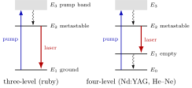

.
.Level schemes

Three-level minimum pump (derivation)
All ions start in (Maiman 1960). Inversion begins when : an energy must be absorbed, and it must be supplied faster than empties, i.e. within :  . In a four-level system is above the ground state and drains quickly, so any population in is already an inversion: thresholds are orders of magnitude lower and CW operation is easy.
. In a four-level system is above the ground state and drains quickly, so any population in is already an inversion: thresholds are orders of magnitude lower and CW operation is easy.
The He–Ne laser
A discharge excites He atoms to metastable 2¹S and 2³S levels; collisions transfer the energy resonantly to Ne levels (3s, 2s), which lase to 2p (632.8 nm, also 543, 1152, 3391 nm); 2p empties to 1s, which empties by collisions with the tube walls — hence narrow tubes (Javan et al. 1961). Brewster windows make the output polarised; one mirror is ≈ 99.9%, the output coupler ≈ 99%. Overall efficiency ≈ 0.1%. Gain is small (a few %/m): the cavity must be low loss.
Worked examples
- Ruby, cm
 , rod 10 cm × 1 cm diameter ( cm³), pump band 2.2 eV, ms: kW — this is why ruby lasers are flash-pumped and pulsed.
, rod 10 cm × 1 cm diameter ( cm³), pump band 2.2 eV, ms: kW — this is why ruby lasers are flash-pumped and pulsed. - He–Ne Doppler width: Ne mass kg, 400 K: GHz (2.0 pm). Tube 40 cm: mode spacing
 MHz, ≈ 4 modes under the FWHM; mode number .
MHz, ≈ 4 modes under the FWHM; mode number . - Threshold inversion, same tube, , , negligible scattering: m
 ; with
; with  ns: m — a tiny fraction of the gas density ( m).
ns: m — a tiny fraction of the gas density ( m). - Photon lifetime: ns, cavity .
Other lasers
Argon ion (488/514.5 nm, W-level, water-cooled, efficiency ≈ 0.05%); CO (10.6 µm, vibrational levels, kW, 10–20% efficiency: cutting and welding); Nd:YAG (four-level, 1064 nm, diode- or lamp-pumped, Q-switched for ns pulses, frequency-doubled to 532 nm); Er-doped fibre (the gain medium of EDFAs, three-level-like at 1550 nm) (Geusic et al. 1964).
(10.6 µm, vibrational levels, kW, 10–20% efficiency: cutting and welding); Nd:YAG (four-level, 1064 nm, diode- or lamp-pumped, Q-switched for ns pulses, frequency-doubled to 532 nm); Er-doped fibre (the gain medium of EDFAs, three-level-like at 1550 nm) (Geusic et al. 1964).
Engineering applications
Alignment, metrology and interferometry (He–Ne, single frequency stabilised to 10), barcode scanners historically, materials processing (CO, Nd:YAG, fibre lasers), medicine and spectroscopy, pumping of dye and Ti:sapphire lasers (Ar ion, doubled Nd).
Exam-style exercise
A He–Ne laser at 632.8 nm has a 30 cm cavity and gain FWHM 1.5 GHz. (a) Mode spacing. (b) How many modes can lase? (c) Cavity length for single-mode operation. (d) Coherence length in both cases.
Solution
(a) MHz. (b) , so 3 (sometimes 2–4 depending on where the comb falls). (c) GHz → cm (or an intracavity etalon). (d) Multimode: cm; single mode with ≈ 1 MHz linewidth: ≈ 300 m (coherence).
Pitfall
"Doppler width" is the width of the gain, not of the laser line: each longitudinal mode is far narrower; the laser spectrum is a comb of narrow lines under the Doppler envelope.